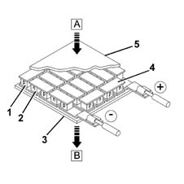
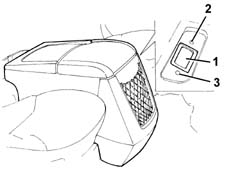

7065C accessories and decorations
- Path
- Descriptions > 70 FITTINGS > 7065 SEAT BELTS AND ACCESSORIES > 7065C accessories and decorations
- Kind
- system description
- Applies to
- all engines; all production periods
- Interactive page
- https://sloeber94.github.io/elrnDB-fMltpl/en/#/2888308
Applies to: all engines; all production periods
CONSTRUCTION FEATURES
The centre seat can be replaced, on request, with a console fitted with compartments and a built in refrigerator.
It is an insulated compartment which can be heated or cooled depending on the requirements of the passengers and the weather: the total capacity is around 18 litres.
The device operates with a special plate working on the Peltier effect principle.
Operating principle
A Peltier effect plate is a thermo-electric device which transfers a certain quantity of heat between the two sides of the actual device ('heat pump') using the Peltier effect principle, in other words the property of some pairs of conductors (semiconductors) to transfer heat if a current passes through the join between the actual conductors.
In practice, a Peltier effect plate is composed of a certain number of pairs of a semiconductor (the material used is bismuth tellurium) which have different electrical charges (type-n: with excess electrons and type-p: with a shortage of electrons): these pairs are electrically connected in series and are located between the two insulating sheets.
If the plate receives a continuous current, the heat is transferred between one side and the other: one side therefore heats up and the other side cools down simultaneously.
The flow of heat between the two sides is simply reversed by changing the polarity of the supply current.

1 - Type-p semiconductor cell 2 - Type-n semiconductor cell 3 - Insulating element (ceramic) 4 - Connecting conductor (copper) + - Supply positive - - Earth A - Cold side (absorbs heat) B - Hot side (supplies heat)
OPERATION
There is a three position switch for:
- switching on the 'refrigerator' (green LED): the power of the device makes it possible to cool the inside of the compartment to 16°C lower than the temperature in the passenger compartment, in about two hours.
- switching on the 'food warmer' (red LED): the power of the device makes it possible to heat the inside of the compartment to + 16°C higher than the temperature in the passenger compartment, in about two hours.
- the device is switched off with the switch in the centre position.

1 - Switch 2 - Green LED: 'refrigerator' operation 3 - Red LED: 'food warmer' operation
.